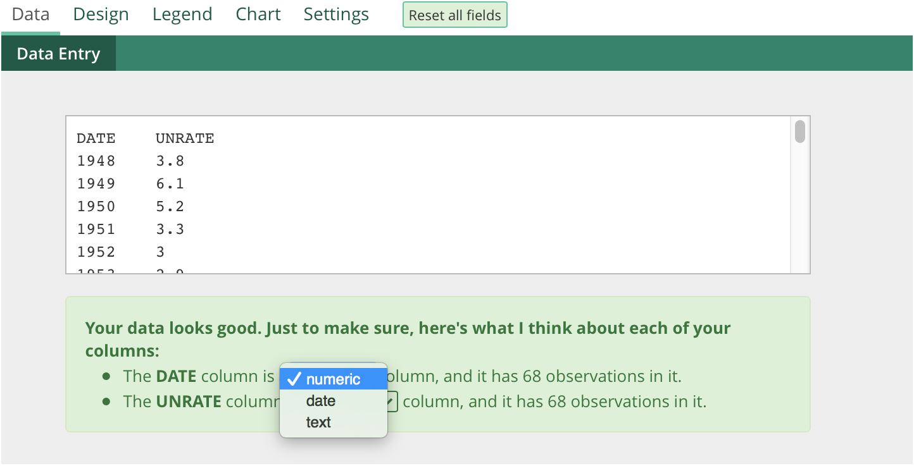

Very important disclaimer: Playfair is currently only compatible with Chrome.
Again, the hosted version of Playfair is available here: austinclemens.com/Playfair/playfair.html
When you load Playfair, you'll be looking at the data tab of the interface. Paste your data into this box. Data can be comma or tab delimited. You can paste data directly from Excel into Playfair.
After pasting your data in, click anywhere outside the data box and Playfair will parse the data. A message will be displayed below the data box summarizing your data. You should look carefully at this message as it may explain problems you are having in graphing. 
For example, in the screenshot above, the 'DATE' variable is being incorrectly interpreted as a numeric variable, where it really should be a date. We can force Playfair to parse this variable as a date by clicking the dropdown and selecting the correct data type. I'm using some US unemployment rate data from FRED in this example. If you want to follow along, copy it from below and paste into Playfair:
You may also get a yellow box. This usually means that some of your data rows are missing data. This is not a problem per se, and shouldn't affect your graphs, but if you notice odd behavior in Playfair you may want to remove these rows.